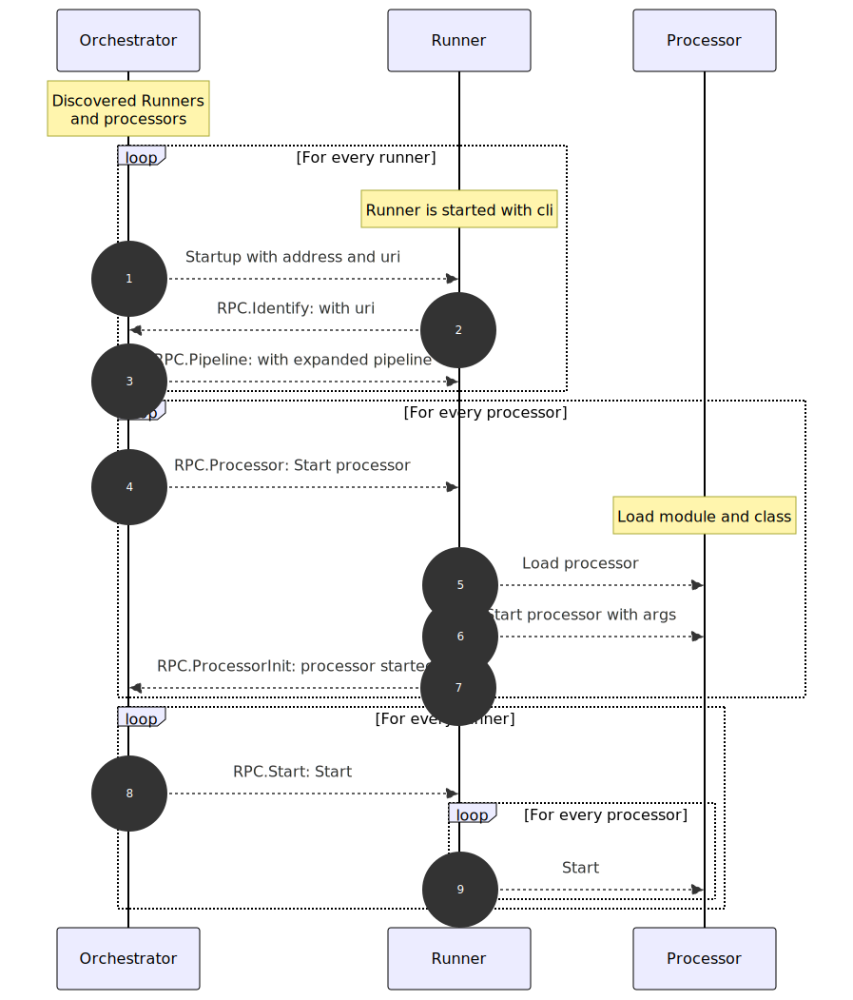

Building Streaming and Cross-Environment Data Processing Pipelines with RDF-Connect
Agenda
- First part: Introduction to RDF-Connect (1:30h)
-
- What will we do in this tutorial? 🤔
- Assembling our very first pipeline! 🛠️
- The what and why of RDF-Connect? 🎯
- RDF-Connect Architecture & Components ⚙️
- Lunch break 🔠(1h)
- Second part: Hands-on (1:30h)
-
- Assembling a pipeline 🔗
- Implementing a processor 🏗️
- Introduction to RDF-Connect
-
- Hands-on
-
Tutorial overview
Part 1: Introduction to RDF-Connect
You will learn the motivation behind RDF-Connect, its conceptual model and architecture,
by following a running example of a knowledge graph lifecycle pipeline.
Part 2: Hands-on
You will implement a ML-based processor and integrate it in the knowledge graph lifecycle pipeline.
KG lifecycle pipeline
A pipeline of a knowledge graph lifecycle process, where weather data (from an Austrian API service)
will be collected, transformed into RDF, validated against a SHACL shape, enriched and published on
a RDF graph store.
- Introduction to RDF-Connect
-
- Hands-on
-
Assembling our very first pipeline
We want to fetch the GeoSphere weather data API,
and log its contents to the console.
We provide a step-by-step
tutorial code repository
- Boilerplate template to get started
- Detailed instructions for each task
- Incremental solutions
- Links to further resources
Step 1: Setup
Install the orchestrator, runner, and processors:
npm install @rdfc/orchestrator-js
npm install @rdfc/js-runner
npm install @rdfc/http-utils-processor-ts
npm install @rdfc/log-processor-ts
ğŸ› ï¸ The
log processor is also available in
Python.
You can swap it to see cross-language interoperability in action!
Step 2: Initialize pipeline.ttl
Add the prefixes rdfc, owl, ex
@prefix rdfc: <https://w3id.org/rdf-connect#>.
@prefix owl: <http://www.w3.org/2002/07/owl#>.
@prefix ex: <http://example.org/>.
Declare the RDF-Connect pipeline
<> a rdfc:Pipeline.
Step 3: Add the rdfc:NodeRunner
Import definition via owl:imports
<> owl:imports <./node_modules/@rdfc/js-runner/index.ttl>.
Attach it to the pipeline declaration
<> a rdfc:Pipeline;
rdfc:consistsOf [
rdfc:instantiates rdfc:NodeRunner;
].
Step 4: Add the rdfc:HttpFetch processor
Import definition via owl:imports
<> owl:imports <./node_modules/@rdfc/http-utils-processor-ts/processors.ttl>.
Define the channel
<json> a rdfc:Reader, rdfc:Writer.
Define the processor instantiation
<fetcher> a rdfc:HttpFetch;
rdfc:url "https://dataset.api.hub.geosphere.at/v1/station/current/tawes-v1-10min?parameters=TL,RR&station_ids=11035";
rdfc:writer <json>.
Attach the processor to the runner
<> a rdfc:Pipeline;
rdfc:consistsOf [
rdfc:instantiates rdfc:NodeRunner;
rdfc:consistsOf <fetcher> ].
Step 5: Add the rdfc:LogProcessorJs
Import definition via owl:imports
<> owl:imports <./node_modules/@rdfc/log-processor-ts/processor.ttl>.
Define the processor instantiation
<logger> a rdfc:LogProcessorJs;
rdfc:reader <json>;
rdfc:level "info";
rdfc:label "output".
Attach the processor to the runner
[ rdfc:instantiates rdfc:NodeRunner;
rdfc:consistsOf <fetcher>, <logger> ].
Step 6: Run the pipeline
npx rdfc pipeline.ttl
# or with debug logging:
LOG_LEVEL=debug npx rdfc pipeline.ttl
✅ Solution available in task-1 branch.
Now try task 0 & 1 yourself!
- Setup
- Initialize pipeline.ttl
- Add the rdfc:NodeRunner
- Add the rdfc:HttpFetch processor
- Add the rdfc:LogProcessorJs
- Run the pipeline
- Introduction to RDF-Connect
-
- Hands-on
-
Data processing pipelines are crucial in modern data-centric systems
They enable the transformation, integration, and analysis of data from and to various sources and targets.
Pipelines are usually composed of multiple complex tasks
However, building, managing and reusing these pipelines can be complex and challenging.
Pipelines are ubiqutous in real world systems
- ETL pipelines for data warehousing
- Data integration pipelines for combining data from multiple sources
- Machine learning pipelines for training and deploying models
- Real-time data processing pipelines for streaming data
Stream processing computational paradigm for continuous and dynamic data systems
Traditional batch processing systems suffer from latency
problems due to the need to collect input data into batches
before it can be processed.
— Isah, H., et al., A
Survey of Distributed Data Stream Processing Frameworks, IEEE Access, 2019
Current real-world data systems often require real-time or near-real-time processing of dynamic data.
Stream processing allows for the continuous ingestion and processing of data as it arrives, enabling
timely insights and actions.
Cross-environment execution: choosing the best of all worlds
The ability to execute applications written in different programming languages in an integrated manner
offers several advantages:
- - Flexibility: Developers can choose the most suitable language for each component of
the application based on its strengths and capabilities.
- - Code reuse: Existing libraries and frameworks can be leveraged, reducing development
time and effort.
- - Scalability: Components can be scaled independently based on their specific
requirements, allowing for efficient resource utilization.
- - Efficiency: Not all parts of an application require the same level of optimization.
Declarative, reusable and provenance-aware data processing
Scientists want to use provenance data to answer questions such as: Which data items were involved in the
generation of a given partial result? or Did this actor employ outputs from one of these two other actors?
— Cuevas-Vicentin, V., et al., Scientific Workflows and Provenance: Introduction and Research
Opportunities, Datenbank Spektrum, 2012
Provenance is instrumental to activities such as traceability, reproducibility, accountability, and quality
assessment.
— Herschel, M., et al., A Survey on Provenance: What for? What form? What from?, VLDB,
2017
Prospective provenance—the execution plan—is essentially the workflow itself: it includes a machine-readable
specification with the processing steps to be performed and the data and software dependencies to carry out
each computation.
— Simone, L., et al., Recording provenance of workflow runs with RO-Crate, PLoS ONE,
2024
RDF-Connect requirements overview
Aren't there like a million pipeline frameworks already?
Aren't there like a million pipeline frameworks already?
Aren't there like a million pipeline frameworks already?
A worthy mention:
Common Workflow Language
Common Workflow Language (CWL) is an open standard for describing how to run command line tools and connect
them to create workflows.
How is RDF-Connect different from CWL?
| Feature |
RDF-Connect |
CWL |
| Streaming |
Supports both batch and streaming via gRPC streams |
Primarily batch-oriented, although
implementation-dependent streaming can be supported (e.g,. using named pipes)
|
| Polyglot |
Supports any language through an add-in libraries
approach
|
Can accomodate polylingual workflows via POSIX CLI
interfaces
|
| Provenance |
Built-in prospective and retrospective provenance
tracking based on PROV-O
|
Provenance extension available (CWLProv) based on
PROV-O
|
| Schema expressivity |
Full SHACL-based expressivity |
Set of defined types and limited constraint definitions
|
- Introduction to RDF-Connect
-
- Hands-on
-
Running example: the goal
- Retrieve JSON data from GeoSphere
weather
API
- Data is transformed into RDF using RML
- Translate language-typed literals to another language
- RDF data is validated against a shape
- RDF data is published through a triple store
High level architecture overview
TODO: Diagram with generic architecture overview. I imagine a simple layered architecture having:
- - an orchestration layer at the top
- - a runners layer highlighting the different environments (e.g., Node.js, browser, Python, etc.)
- - a processors layer with the processors belonging to the different environments
- - a vertical channel layer across all other layers, since channels are used by all other components
RDF-Connect data model overview
TODO: Diagram with RDFC ontology showing main concepts and relations (similar to the one in the ISWC paper)
Pipeline design of running example
Pipeline File Structure
A pipeline is described in RDF configuration files:
- 🔗 Channels
Define how data flows between processors.
- 📦 Runners
Specify which runtime environments are needed.
- ⚙️ Processors
Tasks that run inside a runner.
Deep Dive: SHACL Shapes
Each runner and processor comes with a SHACL shape.
These shapes serve as the glue of RDF-Connect:
- ✅ Validation of correctness
Ensure pipeline definitions are consistent before execution.
- 🔄 Mapping RDF → JSON(-LD)
Define programming interface, a SHACL shape ensures the expected incoming JSON arguments.
- 📖 Documentation
SHACL shapes double as a human-readable and computer-readable contract for processor usage.
Deep Dive: SHACL Shapes Example
Deep Dive Orchestrator: Overview
- 📂 Understand pipeline configuration
Resolve the full pipeline, including any imported modules.
- ✅ Validate pipeline
Use SHACL shapes to check that the pipeline definition is correct.
- 🔌 Communicate with runners
Interact with runners via gRPC to control processors and exchange messages.
- 📊 Centralized logging
Collect logs from all runners and processors for monitoring and debugging.
Deep Dive Orchestrator: Responsibilities
- 📜 Initialize Pipeline
- ▶️ Start runners
Launch each runner using its configured command.
- ⚙️ Initialize processors
Instruct runners to start the processors they manage.
- 📡 Route messages
Deliver incoming messages to the correct runner / processor.

Deep Dive Orchestrator: Message Types
- ✉️ Single messages
Small payloads that fit in a single frame.
- 🌊 Streaming messages
Continuous streams for large data that can’t fit in one frame.
Deep Dive Runner: Overview
- 🤠Bridge between processors and orchestrator
Make it possible to combine processors written in different programming languages.
- 🌱 Lower the barrier for new processors
Runners are designed so the community can easily add their own processors.
Providing idiomatic interfaces for sending and receiving messages.
Currently, runners exist for JavaScript,
JVM, and
Python.
Deep Dive Runner: Responsibilities
- ▶️ Start from command line
Runners can be launched as standalone processes.
- 🔌 Connect with orchestrator via gRPC
Handle control messages and data exchange.
- ⚙️ Manage processors
Start, stop, and monitor the processors they host and forward log messages.
Deep Dive Runner: Example
Example of a runner configuration in RDF (Turtle):
Deep Dive Processor: Overview
- ⚡ Unit of computation inside a pipeline
- 📥 Receives arguments mapped from RDF via SHACL
- 📤 Produces outputs (RDF, JSON, etc.)
- 🛠Can do anything from calling APIs to generic tasks like HTTP POST
- 🗠The runner defines the implementation contract including abstract classes, interfaces, etc.
Deep Dive: Centralized Logging
- 📊 One place for all logs
The orchestrator aggregates logs from every runner and processor.
- 🧩 Idiomatic in every language
Keep using your ecosystem’s standard logger; runners forward those logs to the orchestrator.
- 🯠Targeted DEBUG
Show debug output only for a specific component by using its name from the pipeline descriptor.
Example (bash): DEBUG=:fetcher npx rdfc pipeline.ttl
- 🌠Easy to extend
Updating the orchestrator to forward messages to hubs like Elastic Stack (ELK), Grafana Loki, or a hosted service like Datadog is trivial.
JavaScript Ecosystems
- ⚡ Processor extends an abstract class
- ⚙️ Runner provides Readers & Writers to handle messages idiomatically
- 📦 Processors can be published to npm with their config
- 📥 Pipelines install processors via
npm install
Java Ecosystems
- ⚡ Processor extends an abstract class
- ⚙️ Runner provides Readers & Writers to handle messages idiomatically
- 📦 Processors published via GitHub, included in fat jar with config
- 📥 Pipelines include Jitpack link in
build.gradle
Python ecosystem
- ⚡ Processor extends an abstract class
- ⚙️ Runner provides Readers & Writers to handle messages idiomatically
- 📦 Processors can be published to PyPI with their config
- 📥 Pipelines include processors with
uv add (or pip
install)
- Introduction to RDF-Connect
-
- Hands-on
-
Hands-On
- 🌦 HTTP Fetch → Log contents
- 🔄️ Weather API → RDF → Log
- 🧩️ Weather API → RDF → Validation → Log
- 🚀️ Weather API → RDF → Validation → Publish → Log
- 🤖 Implement your own ML processor in Python
- ✅ Weather API → RDF → Translation → Validation → Publish → Log
Follow allong in the GitHub repository.
All tasks are in the README. Each branch is a solution to a task!
open.gent/r/semantics-repo
What we already did this morning
Follow along on branch task-1,
or
jump to the slides for a recap.
What we already did this morning
@prefix rdfc: <https://w3id.org/rdf-connect#>.
@prefix owl: <http://www.w3.org/2002/07/owl#>.
@prefix ex: <http://example.org/>.
Recap: Running the pipeline
Start the orchestrator with the configuration file:
npx rdfc pipeline.ttl
✅ You should see the HTTP contents being logged.
Hands-On: Pipeline
- 🌦 HTTP Fetch → Log contents
- 🔄️ Weather API → RDF → Log
- 🧩️ Weather API → RDF → Validation → Log
- 🚀️ Weather API → RDF → Validation → Publish → Log
Follow allong in the GitHub repository.
All tasks are in the README. Each branch is a solution to a task!
open.gent/r/semantics-repo
Pipeline design: Weather KG
Weather KG Pipeline: JavaScript Setup
Install the additionally required processors:
npm install @rdfc/file-utils-processors-ts
npm install @rdfc/shacl-processor-ts
npm install @rdfc/sparql-ingest-processor-ts
Weather KG Pipeline: Java Setup
Add the required dependency to your Gradle build file:
plugins { id 'java' }
repositories {
mavenCentral()
maven { url = uri("https://jitpack.io") }
}
dependencies {
implementation("com.github.rdf-connect:rml-processor-jvm:master-SNAPSHOT:all")
}
tasks.register('copyPlugins', Copy) {
from configurations.runtimeClasspath
into "$buildDir/plugins"
}
Install jars with
gradle copyPlugins.
The jvm-runner downloads the jvm-runner itselve, no installing required.
If you do not want to use Gradle, you can also download the jars manually and put them in the build/plugins/
folder.
wget 'jitpack.io/com/github/rdf-connect/rml-processor-jvm/master-SNAPSHOT/rml-processor-jvm-master-SNAPSHOT-all.jar'
Run the Weather KG Pipeline
Start the orchestrator with the configuration file:
npx rdfc pipeline.ttl
Don't forget to start a SPARQL endpoint!
→ We provide a
docker-compose.yml
with a Virtuoso instance configured.
Now try it yourself!
ğŸ› ï¸ Follow Part 1 in the repo (up to Task 4)
⏰ We continue with the presentation at 13:45
🙋 Ask questions!

- Introduction to RDF-Connect
-
- Hands-on
-
Hands-On
- 🌦 HTTP Fetch → Log contents
- 🔄️ Weather API → RDF → Log
- 🧩️ Weather API → RDF → Validation → Log
- 🚀️ Weather API → RDF → Validation → Publish → Log
- 🤖 Implement your own ML processor in Python
- ✅ Weather API → RDF → Translation → Validation → Publish → Log
Follow allong in the GitHub repository.
All tasks are in the README. Each branch is a solution to a task!
open.gent/r/semantics-repo
Implement a processor
- Define the processor and its SHACL shape in processor.ttl
- Implement the processor class
- Extend the abstract class
- Implement the
init, transform, and produce methods
- Use Readers & Writers to handle messages
- Publish the processor
- Use the processor in a pipeline
Define the processor in processor.ttl
@prefix rdfc: <https://w3id.org/rdf-connect#>.
@prefix rdfs: <http://www.w3.org/2000/01/rdf-schema#>.
Define the processor in processor.ttl
@prefix rdfc: <https://w3id.org/rdf-connect#>.
@prefix sh: <http://www.w3.org/ns/shacl#>.
@prefix xsd: <http://www.w3.org/2001/XMLSchema#>.
sh:targetClass links back to the IRI used on
previous slide
Custom class for readers and writers:
rdfc:Reader & rdfc:Writer
sh:name links to variable name in code
sh:path links to property in pipeline.ttl
Optional and multiple argumnets with sh:minCount and sh:maxCount
(sh:maxCount != 1 results in a list of arguments)
Implement the processor class
Implement a Python processor
- In the
transform method: consume the reader channel
- Parse the input using rdflib
- Identify language-tagged literals with @de
- Translate them to English using a ML model
- Emit both original and translated triples to the writer channel
- Define the processor in processor.ttl
Add the Python runner
Set up the pyproject.toml for your pipeline
Configure specific Python version to have a deterministic path to the dependencies.
Add the rdfc-runner as a dependency.
Add the Python runner
Install the runner:
uv add rdfc_runner
Import definition via owl:imports
<> owl:imports <./.venv/lib/python3.13/site-packages/rdfc_runner/index.ttl>.
Attach it to the pipeline declaration
<> a rdfc:Pipeline;
rdfc:consistsOf [...], [
rdfc:instantiates rdfc:PyRunner;
rdfc:processor <translator>
].
Add your translation processor
Install your local processor after hatch build
uv add ../processor/dist/rdfc_translation_processor.tar.gz
Import definition via owl:imports
<> owl:imports <./.venv/lib/python3.13/site-packages/rdfc_translation_processor/processor.ttl>.
Define the channel
<translated> a rdfc:Reader, rdfc:Writer.
Define the processor instantiation
<translator> a rdfc:TranslationProcessor;
rdfc:reader <rdf>
rdfc:writer <translated>
... .
Hands-On: Processor
- 🤖 Implement your own ML processor in Python
- ✅ Weather API → RDF → Translation → Validation → Publish → Log
Follow allong in the GitHub repository.
All tasks are in the README. Each branch is a solution to a task!
open.gent/r/semantics-repo
Pipeline design: Weather KG With ML
Now try it yourself!
ğŸ› ï¸ Follow Part 2 in the repo (Task 5 - 7)
🙋 Ask questions!

Building Streaming and Cross-Environment Data Processing
Pipelines with RDF-Connect
Thank you!
We sincerely hope you enjoyed this tutorial
and found it valuable.